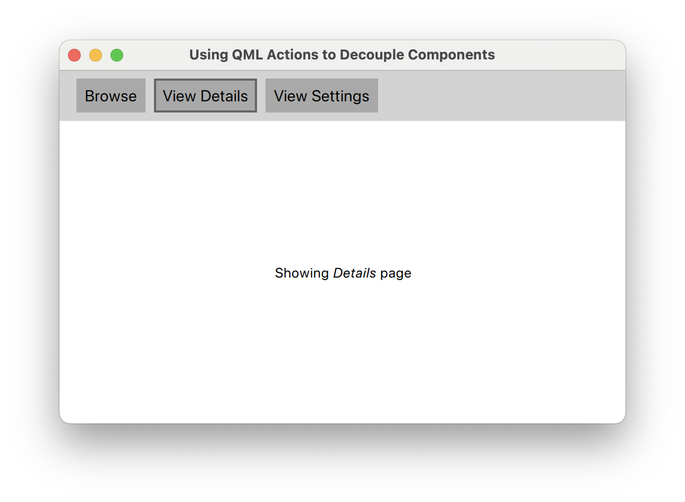

Using QML Actions to decouple components
Problem statement
Imagine a simple application with three pages and a toolbar to navigate between the pages. In QML, we can use a StackView [1] to display the pages, together with nice transition animations.
Here's our Main.qml:
ApplicationWindow { id: root title: "Using QML Actions to Decouple Components" width: 1280 height: 800 visible: true menuBar: UI.Toolbar { view: view } StackView { id: view anchors.fill: parent } }
And this is how it looks:
Simple enough, right? But you of course already guessed that all the heavy-lifting must have been done by the UI.Toolbar:
// UI.Toolbar Container { id: root function showPage(view, page, objectName) { ... } required property StackView view readonly property Component browsePage: Page { objectName: "browsePage" text: "Showing <em>Browse</em> page" } readonly property Component detailsPage: Page { objectName: "detailsPage" text: "Showing <em>Details</em> page" } readonly property Component settingsPage: Page { objectName: "settingsPage" text: "Showing <em>Settings</em> page" } contentItem: Row { spacing: 8 } Button { text: "Browse" onClicked: root.showPage(root.view, root.browsePage, "browsePage") } Button { text: "View Details" onClicked: root.showPage(root.view, root.detailsPage, "detailsPage") } Button { text: "View Settings" onClicked: root.showPage(root.view, root.settingsPage, "settingsPage") } Component.onCompleted: root.showPage(root.view, root.browsePage, "browsePage") }
The toolbar is not just responsible for showing a couple of buttons, it also implements the whole push'n'pop logic for pages in the StackView. This creates a tight coupling between toolbar, pages and StackView, so let's try to fix it.
Cleaning up the Mess
We start by moving the visual components into a custom StackView component:
// UI.View StackView { id: root function showPage(view, page, objectName) { ... } readonly property Component browsePage: Page { objectName: "browsePage" text: "Showing <em>Browse</em> page" } readonly property Component detailsPage: Page { objectName: "detailsPage" text: "Showing <em>Details</em> page" } readonly property Component settingsPage: Page { objectName: "settingsPage" text: "Showing <em>Settings</em> page" } Component.onCompleted: root.showPage(root, root.browsePage, "browsePage") }
But how do we fix the buttons' onClicked behaviour now that the pages are no longer available to them? This is where QML's Action [2] component comes into play.
Actions are a common pattern in UI toolkits. They encapsulate the user's intent to trigger predefined behaviour, usually through the click of a button. In QML, many interactive controls derive from AbstractButton [3]. They all can be set up and controlled through actions like so:
Button {
action: Action {
text: "Click me!"
onTriggered: console.log("Action triggered!")
}
}
Here, the button makes use of action's properties. This enables us to split off the visual presentation of a behaviour from its definition! Quite often, a neat trick to decouple components is to inject actions instead of defining them in place:
// UI.Toolbar Container { id: root required property Action browse required property Action viewDetails required property Action viewSettings contentItem: Row { spacing: 8 } Button { action: root.browse } Button { action: root.viewDetails } Button { action: root.viewSettings } }
Now what did we gain? Well, we can swap out or change the actions elsewhere without having to touch the visual presentation of them (via buttons) in the toolbar. Also, there's now much less logic in the toolbar that could break.
Tying it Together
View and toolbar no longer know of each other's existence. In fact, they are now loosely coupled. Their whole interaction depends entirely on how and where we define the actions. Main.qml is a good place for that:
ApplicationWindow { id: root title: "Using QML Actions to Decouple Components" width: 1280 height: 800 visible: true menuBar: UI.Toolbar { browse: Action { text: "Browse" onTriggered: view.showPage(view, view.browsePage, "browsePage") } viewDetails: Action { text: "View Details" onTriggered: view.showPage(view, view.detailsPage, "detailsPage") } viewSettings: Action { text: "View Settings" onTriggered: view.showPage(view, view.browsePage, "settingsPage") } } UI.View { id: view anchors.fill: parent } }
The toolbar has gained three new Action properties, as compared to the single view property in the beginning. Yet the combined maintenance cost of the Action properties will be far less than if we had kept the view dependency in the toolbar.